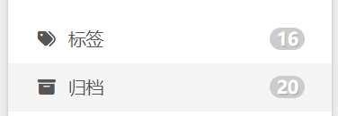

NexT 主题配置（补充）
前言
之前已经写过一些NexT配置了，看到了一些新颖的（花里胡哨的）设置后，想曾加到我的网站上。
原来的NexT配置记录：“Hexo安装日志”的“修改并配置Hexo主题——NexT主题”章节
为什么不在原来的文章上写？因为原文章写的比较长了，再写比较乱了（水个文章数量+1）
参考链接：【Hexo】NexT 主题的配置使用记录
渲染 Mermaid 绘图
安装hexo-filter-mermaid-diagrams 插件
npm install hexo-filter-mermaid-diagrams --save打开 NexT 主题的 _config.yml 配置文件，找到 mermaid 的配置项，并设置 enable: true，如下所示：
# Mermaid tag
mermaid:
enable: true
# Available themes: default | dark | forest | neutral
theme:
light: default
dark: dark阅读进度
阅读进度有两种展示方式
一、在回到首页的按钮上直接显示百分比
二、配置在首位部增加进度条
back2top:
enable: true
# Back to top in sidebar.
sidebar: false
# Scroll percent label in b2t button.
scrollpercent: true
# Reading progress bar
reading_progress:
enable: true
# Available values: left | right
start_at: left
# Available values: top | bottom
position: top
reversed: false
color: "#455667"
height: 3px开启图标和数量的气泡显示
# Enable / Disable menu icons / item badges.
menu_settings:
icons: true
badges: true
设置代码块颜色并添加复制按钮
编辑主题配置文件，可在网页https://theme-next.js.org/highlight/预览效果
codeblock:
# Code Highlight theme
# All available themes: https://theme-next.js.org/highlight/
theme:
light: default
dark: default
prism:
light: prism
dark: prism
# Add copy button on codeblock
copy_button:
enable: true
# Available values: default | flat | mac
style: default修改站点配置文件
highlight:
enable: false
...
prismjs:
enable: true
...书签
NexT的书签功能可以保存当前的阅读进度，下次打开是会在续接该进度
# Bookmark Support
bookmark:
enable: true
# Customize the color of the bookmark.
color: "#222"
# If auto, save the reading progress when closing the page or clicking the bookmark-icon.
# If manual, only save it by clicking the bookmark-icon.
save: autofancybox
fancybox 可以在点击图片时放大该图片，并且可以快速浏览当前文章的所有图片
# FancyBox is a tool that offers a nice and elegant way to add zooming functionality for images.
# For more information: https://fancyapps.com/fancybox/
fancybox: true不蒜子
会与 Live2D 冲突问题 不启用了。。。。
不蒜子 是一个极简的网页计数器，NexT 已经内置，只需打开即可
# Show Views / Visitors of the website / page with busuanzi.
# For more information: http://ibruce.info/2015/04/04/busuanzi/
busuanzi_count:
enable: true
total_visitors: true
total_visitors_icon: fa fa-user
total_views: true
total_views_icon: fa fa-eye
post_views: true
post_views_icon: far fa-eyelazyload
lazyload 是网站常用的技术，通过按需加载，避免一次性加载过多内容导致的打开缓慢
# Vanilla JavaScript plugin for lazyloading images.
# For more information: https://apoorv.pro/lozad.js/demo/
lazyload: truepangu
对于强迫症来说，中英文混排时加上空格能很大程度改善阅读体验，但是有时候会不小心打漏部分空格，而 pangu 这个项目就可以帮你在展示时自动加上空格
# Pangu Support
# For more information: https://github.com/vinta/pangu.js
# Server-side plugin: https://github.com/next-theme/hexo-pangu
pangu: true版权声明
NexT 内置了文章末尾增加版权声明，只需手动开启即可
# Creative Commons 4.0 International License.
# See: https://creativecommons.org/about/cclicenses/
creative_commons:
# Available values: by | by-nc | by-nc-nd | by-nc-sa | by-nd | by-sa | cc-zero
license: by-nc-sa
# Available values: big | small
size: small
sidebar: false
post: true
# You can set a language value if you prefer a translated version of CC license, e.g. deed.zh
# CC licenses are available in 39 languages, you can find the specific and correct abbreviation you need on https://creativecommons.org
language:捐赠
文章末尾还可以求打赏，需要配置好相应的二维码图片，并且可以修改提示语句
# Donate (Sponsor) settings
# Front-matter variable (nonsupport animation).
reward_settings:
# If true, a donate button will be displayed in every article by default.
enable: true
animation: false
comment: 赏杯可乐🥤
reward:
wechatpay: /images/wechatpay.jpg
alipay: /images/alipay.jpg
#paypal: /images/paypal.png
#bitcoin: /images/bitcoin.png